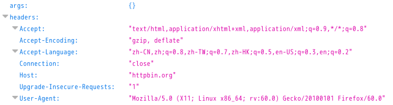

python 简单爬虫
这不是一篇完整的爬虫教程，这是一篇使用python完成简单爬虫的使用过程记录。
使用 python3 以及第三方库 requests 和 lxml 以及 xpath 技术来爬取一些网页数据
这里只是用了 GET 请求，没有使用 POST 请求
第三方库和技术介绍
requests: 这里使用 requests 来请求一个网页，并将响应结果封装在一个对象中返回
lxml: 使用 lxml 中的 etree 库对响应的 HTML 页面进行解析
xpath: 一种解析 xml 文档的技术，也可以解析 HTML 页面。在w3c可以找到文档
过程介绍
- 使用
requests.get函数请求对应的URL - 如果请求正常并有返回，将返回结果通过
etree.HTML处理 - 使用
xpath技术对etree.HTML处理过的对象进行解析，获取对应的数据 - 数据存储
请求页面
请求头
使用requests.get(url)方式可以请求对应的url内容，并将响应结果封装在一个对象中返回，但是直接使用这种方式的请求头中包含这个"User-Agent":"python-requests/2.19.1"
有些服务器会通过这个请求头得知这是一个python爬虫请求从而拒绝响应。为了正常访问，需要传入一个请求头来覆盖这个属性，从而骗过请求服务器。
在firefox浏览器中通过请求http://httpbin.org/get可以获得本机的请求头，下面是我请求的该链接的部分内容

将请求中的User-Agent对应的属性作为键值对形式传入requests.get()的headers参数，如下
1 | header = {"User-Agent":"Mozilla/5.0 (X11; Linux x86_64; rv:60.0) Gecko/20100101 Firefox/60.0"} |
请求参数
如果你想要传入查询参数，只需要以键值对的形式传入requests.get中的params，下面的查询键为’user’，对应的值为’tom’
1 | data = {"user":"tom"} |
请求超时设置
对requests.get函数的timeout参数传入一个数字可以设置请求的最长时间
1 | response = requests.get(url, timeout=0.1) |
响应处理
使用response = requests.get()之后就获取了响应结果，这时可以对响应做一些处理
响应码
response.status_code返回请求的响应码，正常情况下返回200
字符设置
响应返回的结果不一定可以正常显示，对response.encoding属性进行赋值可以修改返回的字符集，一般设置为utf-8
1 | response.encoding = 'utf-8' |
返回结果
response.text将数据以文本形式返回，文本形式的字符集和字符设置有关，如果没有设置则返回响应数据设置的字符集
response.content将数据以字节形式返回，使用这种方式返回就不用担心返回的数据出现乱码问题
一个完整的请求实例
请求一个url并将响应结果以文本的形式返回
1 | user_agent = "User-Agent" |
xpath处理
使用lxml中的etree库中的HTML函数可以将一个HTML页面转换为一个对象，对该对象使用xpath语法即可获取对应的数据。有关更多的xpath技术点击这里
1 | from lxml import etree |
对于使用xpath语法来获取数据，在firefox浏览器中使用这个插件，可以在线使用xpath语法来匹配
注意:使用xpath语法返回的数据都是以列表形式返回